ROPE-based trial design for single-arm one-stage phase II trials with binary endpoints
Riko Kelter
Institute of Medical Statistics and Computational Biology
Faculty of Medicine
University of Cologne
Cologne, Germany
Institute of Medical Statistics and Computational Biology
Faculty of Medicine
University of Cologne
Cologne, Germany
23 June 2026
Source:vignettes/bfbin2arm-rope-singlearm-onestage-design.Rmd
bfbin2arm-rope-singlearm-onestage-design.RmdIntroduction
This vignette illustrates how to use
design_singlearm_onestage_rope() to calibrate ROPE-based
equivalence designs for single-arm phase II trials with binary
endpoints. ROPE stands for the region of practical equivalence and has
been proposed by Kruschke and Liddell
(2018), Kruschke (2014) and Kruschke (2018), even though the idea itself is
older and appears under various names in different contexts, see Kelter (2021), Liao et
al. (2020), Linde et al. (2023),
Lakens et al. (2018), Wellek (2010) and Pan et
al. (2025). The idea to replace the test of a point-null
hypothesis with a small-interval goes at least back until Hodges and Lehmann (1954).
Setup
We consider a single-arm binomial model
where is the number of responders among patients and is the true response probability under the experimental treatment. We fix a benchmark response rate (e.g. historical control or standard of care) and define the risk difference
We work with a symmetric ROPE formulation on the risk-difference scale. Let denote the risk difference between the experimental treatment and the benchmark response probability , and let be the equivalence margin. On the risk-difference scale we define
Equivalently, on the response-probability scale the ROPE is
and the hypotheses can be written as
The region of practical equivalence (ROPE)
The region of practical equivalence (ROPE) on the risk-difference scale is
where is a prespecified equivalence margin. Equivalently, on the response-probability scale the ROPE for is
Given a beta analysis prior
the posterior after observing is
and the posterior ROPE probability is
with endpoints truncated to if needed. A ROPE-based equivalence decision rule declares practical equivalence if
where is a pre-specified evidence threshold.
Design and analysis priors
At the design stage we distinguish between three priors:
- an analysis prior used to compute posterior ROPE probabilities,
- a design prior under equivalence , typically centred near ,
- a design prior under non-equivalence , typically centred away from the ROPE.
These design priors induce beta–binomial predictive distributions for under equivalence and non-equivalence, respectively. Under the equivalence design prior we define ROPE-based Bayesian power as
and under the non-equivalence design prior we define the ROPE-based Bayesian type-I error as
ROPE decision illustrations
In this section we illustrate the ROPE-based decision rule for four prototypical outcomes in a single-arm binomial model with analysis prior , benchmark response rate , and ROPE with .
For an observed responder count out of patients, the posterior is
and the symmetric ROPE probability is
We adopt the following simple decision rule:
- Equivalence accepted if .
- Non-equivalence accepted if .
- Indecisive otherwise,
with in the examples below.
1) Equivalence accepted
We choose an outcome for which the posterior is concentrated inside the ROPE and , so the decision is to accept equivalence.
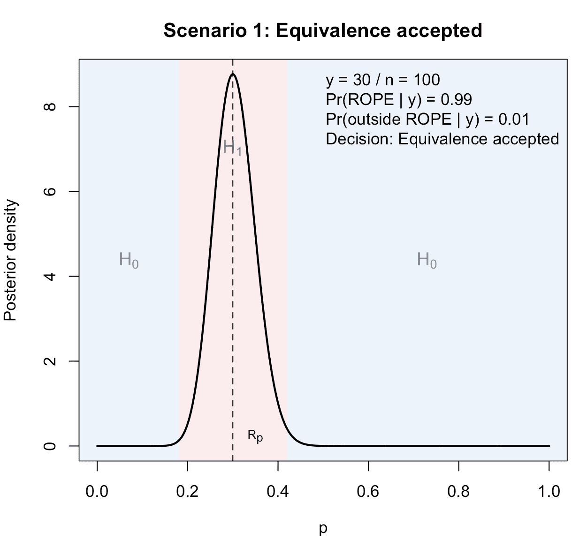
Figure 1: Illustration of the first possible scenario in a ROPE-based clinical phase II trial with binary endpoints: Equivalence is accepted, because sufficient posterior probability mass concentrates inside the ROPE. The true data-generating process follows the alternative hypothesis, that is, equivalence indeed holds.
The plot illustrates this first possible outcome.
2) Type-I error: equivalence concluded under the null hypothesis
Conceptually, a type-I error occurs when the true data-generating process is non-equivalent (e.g. or 0.60), but the observed data still lead the ROPE rule to accept equivalence. Thus, is true and holds.
In this plot we do not change the posterior calculation—posterior is always conditional on the observed and the analysis prior. To illustrate a type-I error, we choose such that:
- is plausible under a non-equivalence scenario (e.g. generated from ), and
- the resulting posterior still satisfies .
For illustration we tune so that this happens:
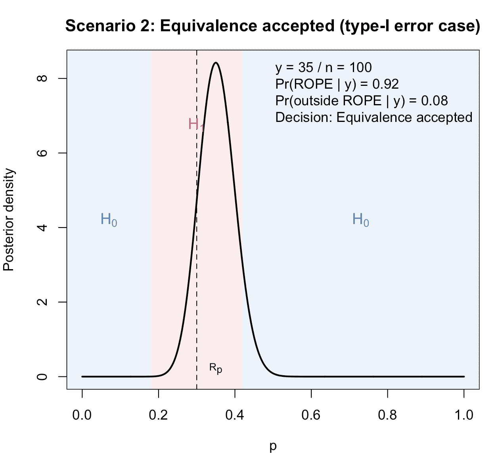
Figure 2: Illustration of the second possible scenario in a ROPE-based clinical phase II trial with binary endpoints: Equivalence is accepted, because sufficient posterior probability mass concentrates inside the ROPE. In contrast to the first possible scenario, the true data-generating process follows the null hypothesis. Thus, a ROPE-based type-I-error occurs.
In this scenario, in contrast to scenario 1 above, the true lies outside the ROPE (under ), but due to sampling variability the posterior still concentrates enough mass inside the ROPE to meet the equivalence threshold.
3) Indecisive result
Here we choose such that neither threshold is reached:
- ,
- .
The posterior spreads substantial mass both inside and outside the ROPE, and the decision is indecisive.
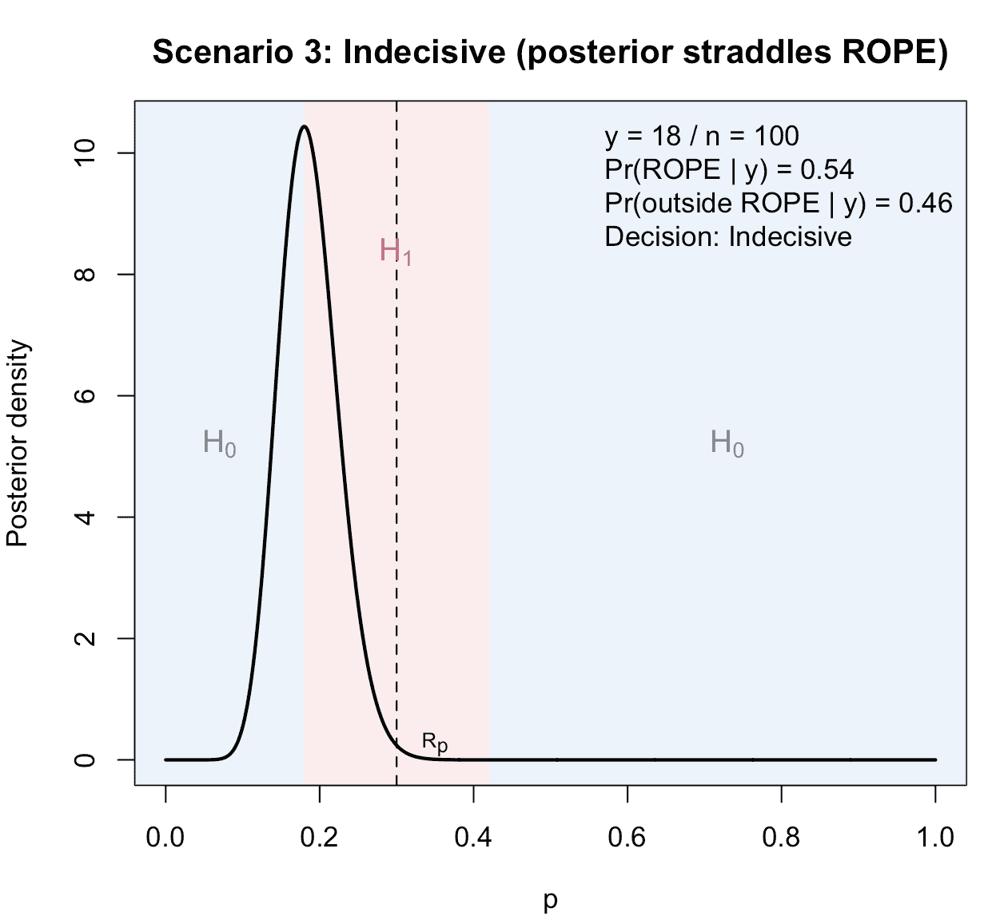
Figure 3: Illustration of the third possible scenario in a ROPE-based clinical phase II trial with binary endpoints: The result is indecisive, because neither does sufficient posterior probability mass concentrate inside the ROPE, nor outside the ROPE.
4) Clear non-equivalence
Finally, we choose an outcome where the posterior lies mostly outside the ROPE, so that and we accept non-equivalence.
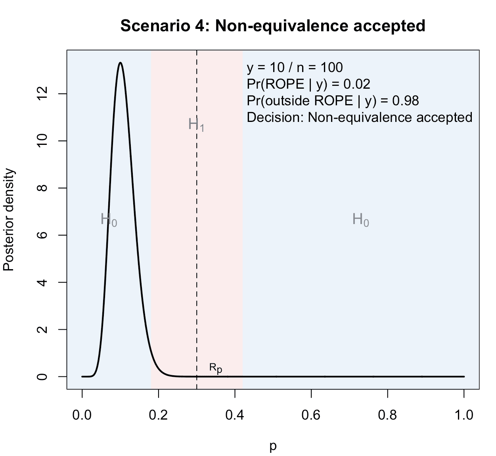
Figure 4: Illustration of the fourth possible scenario in a ROPE-based clinical phase II trial with binary endpoints: Non-equivalence is accepted, because sufficient posterior probability mass concentrates outside the ROPE.
In this last case, the treatment is worse than the standard of care with success probability .
A first ROPE-based design example
We now provide a simple example of the calibration function
design_singlearm_onestage_rope(), which calibrates a
single-arm one-stage phase II design using the ROPE as the primary
measure of evidence.
We consider a setting with benchmark response rate and regard differences up to 0.12 as clinically negligible. Thus the ROPE on is .
We use:
- a uniform analysis prior ,
- a non-equivalence design prior with mean 0.60, representing clearly superior response compared to 0.30 (non-equivalence); this is the design prior under
- an equivalence design prior with mean 0.30, representing plausible equivalence scenarios; this is the design prior under
- an equivalence threshold ,
- a target ROPE-based power of 0.80 under the equivalence design prior,
- a maximum ROPE-based type-I error of 0.10 under the non-equivalence design prior,
- a sustain requirement of
sustain_n = 10, meaning the criteria must hold for 10 consecutive sample sizes starting from the selected .
des_baseline <- design_singlearm_onestage_rope(
n_min = 20,
n_max = 200,
p0 = 0.30, # benchmark response rate p0
delta = 0.12, # ROPE half-width: equivalence if p in [0.18, 0.42]
gamma_eq = 0.80, # posterior ROPE probability threshold for equivalence
# Analysis prior: p ~ Beta(a, b), used for posterior and ROPE decision
a = 1,
b = 1,
# Design prior under H0 (non-equivalence): p ~ Beta(da0, db0)
# Here: mean 0.60, representing clearly higher response than 0.30.
da0 = 60,
db0 = 40,
# Design prior under H1 (equivalence): p ~ Beta(da1, db1)
# Here: mean 0.30, representing plausible equivalence scenarios.
da1 = 36,
db1 = 84,
# Target ROPE-based power under H1 (equivalence design prior)
target_power = 0.80,
# Maximum ROPE-based type-I error under H0 (non-equivalence design prior)
target_type1 = 0.10,
# Stability requirement: criteria must hold for 10 consecutive n values
sustain_n = 10
)We can take a look at the resulting design object:
des_baseline
#> One-stage single-arm ROPE design
#> Direction: equivalence
#> Calibration: Bayesian
#> Search range n: 20 to 200
#> Null probability p0: 0.3
#> Margin delta: 0.12
#> Probability threshold gamma_eq: 0.8
#> Probability threshold gamma_diff: 0.8
#> Analysis prior: Beta(1, 1)
#> Design prior (H0): Beta(60, 40)
#> Design prior (H1): Beta(36, 84)
#> Target Bayesian power: 0.8
#> Target Bayesian type-I error: 0.1
#> Sustain n: 10
#> Selected sample size n*: 94
#> Bayesian power(n*): 0.8231
#> Bayesian type-I(n*): 0.0009
#> PCE(H0)(n*): 0.9730
#> Equivalence region: {20-35}
#> Compelling evidence for non-equivalence region: {0-13, 44-94}The printed output reports:
- the search range for ,
- the ROPE specification (
p0,delta,gamma_eq), - the analysis and design priors in beta parameterization,
- the target power and type-I constraints,
- the chosen
sustain_n, - the selected sample size
Selected n, - the ROPE-based power and type-I error at that ,
- and the equivalence decision region , i.e. all responder counts that lead to practical equivalence.
Summarizing the design
We can summarize the calibration grid and the selected design via:
summary(des_baseline)The summary object (not shown here) contains:
- the selected row of the grid (with
n,y_eq_min,y_eq_max,power,type1), - the first and last 10 rows of the evaluated
nvalues.
In particular:
-
y_eq_minandy_eq_maxare the smallest and largest responder counts for which the posterior ROPE probability exceedsgamma_eqand equivalence would be concluded; -
poweris the ROPE-based Bayesian power under the equivalence design prior at thatn; -
type1is the ROPE-based Bayesian type-I error under the non-equivalence design prior at thatn.
These summaries allow you to inspect how power and type-I error evolve with increasing sample size, and how the equivalence decision region moves.
Plotting the design
The overview plot visualizes operating characteristics, priors, and a textual summary:
plot(des_baseline)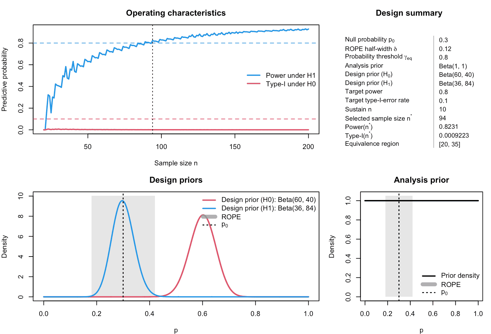
Figure 5: Illustration of calibrated single-arm one-stage design of a ROPE-based clinical phase II trial with binary endpoint.
- The upper left panel shows ROPE-based power and
type-I error as functions of
,
with horizontal lines at
target_powerandtarget_type1, and a vertical line at the selectedn. - The upper right panel displays a textual summary of
the key inputs and outputs (priors, ROPE, thresholds, selected
n, power, type-I, and equivalence region). - The lower left panel displays the design priors
under
H0andH1overlaid: their beta densities highlight which response probabilities are regarded as typical under non-equivalence and equivalence, respectively. - The lower right panel displays the analysis prior , which governs the posterior ROPE probabilities used in the decision rule.
You can also visualize only the operating characteristics or the decision region:
plot(des_baseline, what = "operating_characteristics")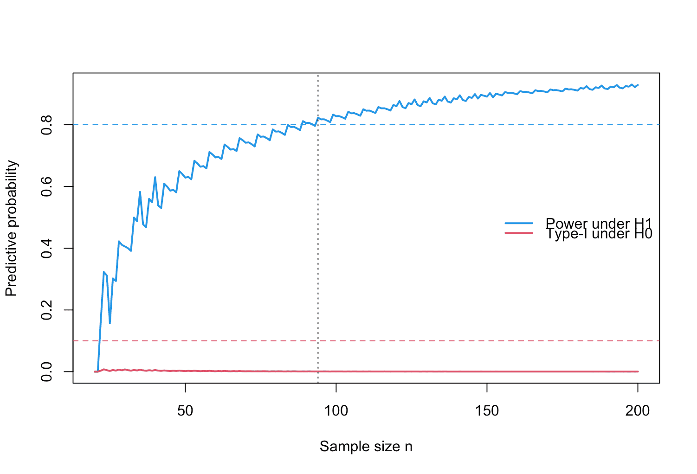
Figure 6: Visualization of the operating characteristics of a calibrated single-arm one-stage design of a ROPE-based clinical phase II trial with binary endpoint.
plot(des_baseline, what = "decision_region")Figure 7: Visualization of the equivalence region for increasing sample size of a calibrated single-arm one-stage design of a ROPE-based clinical phase II trial with binary endpoint.
The decision-region plot shows how the range of responder counts
leading to equivalence changes with n, providing intuition
about how stringent the rule is at different sample sizes.
Example 1: Oncology phase II equivalence trial
In this section we illustrate a full ROPE-based design calibration in a setting resembling a single-arm phase II oncology trial with a binary endpoint such as objective response rate (ORR), compare Chen et al. (2022), Kelter and Schnurr (2024) and Lee and Liu (2008). For definiteness, we assume:
- Historical control ORR based on previous phase II data.
- The new treatment is considered clinically non-inferior / equivalent if its true ORR lies within ±12 percentage points of , that is, . This is a common margin in phase II oncology trials, compare Hashim et al. (2021).
- We want a high probability to conclude practical equivalence when the true ORR is near 0.25, and a low probability to conclude equivalence when the true ORR is clearly better or worse than 0.25 (non-equivalence).
Clinical hypotheses and ROPE
On the response-probability scale we set and . The ROPE for equivalence is
We formulate the hypotheses as
We adopt the following ROPE-based decision rule:
- Accept equivalence () if .
- Accept non-equivalence () if .
- Indecisive otherwise.
For this example, we set .
Analysis and design priors
We separate the analysis prior from the design priors.
-
Analysis prior for ORR:
a uniform prior on , reflecting weak prior information.
-
Design prior under equivalence :
which has mean and moderate concentration around . This prior represents plausible ORR values under practical equivalence.
-
Design prior under non-equivalence : we consider superior scenarios where ORR is clinically higher than 0.42. For concreteness we choose
which is centred at 0.6 and places most mass clearly outside the ROPE interval [0.18, 0.42]. This prior represents clinically relevant departures from equivalence (e.g. strong improvement), and is used to quantify ROPE-based type-I error for wrongly declaring equivalence in such scenarios.
These design priors induce beta–binomial predictive distributions for the response count under and , respectively.
Under the equivalence design prior , the ROPE-based Bayesian power is
and under the non-equivalence design prior , the ROPE-based Bayesian type-I error is
Calibration target
For this oncology-inspired example we consider the following calibration goals:
- ROPE-based power under at least 80%: .
- ROPE-based type-I error under at most 10%: .
- A stability requirement
sustain_n = 10, meaning that the criteria must hold for 10 consecutive sample sizes starting at the selected . This guards against local non-monotonicities in the discrete predictive curves.
We search over a one-stage sample size range of 20 to 200 patients.
des_onc <- design_singlearm_onestage_rope(
n_min = 20,
n_max = 200,
p0 = 0.30,
delta = 0.12,
gamma_eq = 0.80,
# Analysis prior p ~ Beta(a, b)
a = 1, b = 1,
# Design priors under H0 and H1
da0 = 60, db0 = 40, # H0: non-equivalence, mean ~0.60
da1 = 36, db1 = 84, # H1: equivalence, mean ~0.3
target_power = 0.80,
target_type1 = 0.10,
sustain_n = 10
)
des_onc
#> One-stage single-arm ROPE design
#> Direction: equivalence
#> Calibration: Bayesian
#> Search range n: 20 to 200
#> Null probability p0: 0.3
#> Margin delta: 0.12
#> Probability threshold gamma_eq: 0.8
#> Probability threshold gamma_diff: 0.8
#> Analysis prior: Beta(1, 1)
#> Design prior (H0): Beta(60, 40)
#> Design prior (H1): Beta(36, 84)
#> Target Bayesian power: 0.8
#> Target Bayesian type-I error: 0.1
#> Sustain n: 10
#> Selected sample size n*: 94
#> Bayesian power(n*): 0.8231
#> Bayesian type-I(n*): 0.0009
#> PCE(H0)(n*): 0.9730
#> Equivalence region: {20-35}
#> Compelling evidence for non-equivalence region: {0-13, 44-94}The printed output shows the selected sample size , ROPE-based power and type-I error at that , and the equivalence decision region in terms of the responder counts that lead to practical equivalence.
summary(des_onc)The summary (not shown here) gives the first and last rows of the calibration grid, along with the selected design point. These values can be reported, e.g. as a table listing , the ROPE region , the decision thresholds and the resulting ROPE-based power and type-I error. This is primarily helpful when analyzing a specific design or the relationship of the operating characteristics and the sample size.
Visualization
We can inspect the operating characteristics and prior structure in more detail.
plot(des_onc)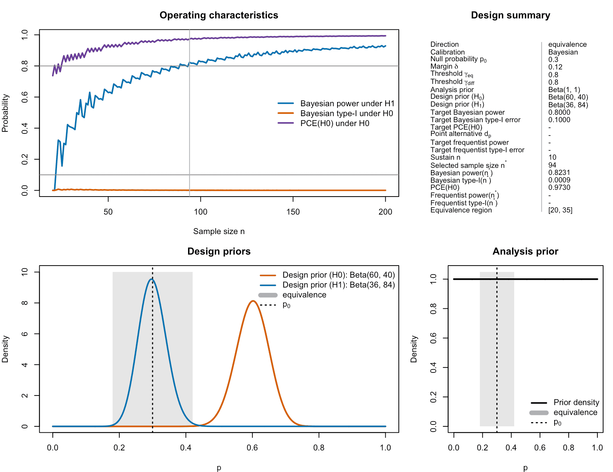
Figure 8: Visualization of the calibrated ROPE-based oncology single-arm one-stage phase II design with binary endpoints.
- The upper-left panel shows ROPE-based power and type-I error as functions of .
- The upper-right panel summarizes the design numerically.
- The lower-left and middle panels overlay the design priors under and .
- The lower-right panel shows the analysis prior.
For example, the equivalence design prior Beta(36, 84)
reflects prior belief that in realistic equivalence scenarios, the ORR
is close to 30%, whereas the non-equivalence design prior
Beta(60, 40) reflects scenarios with substantially higher
ORR around 60%.
To see how the equivalence decision region changes with sample size, we can plot the decision region directly:
plot(des_onc, what = "decision_region")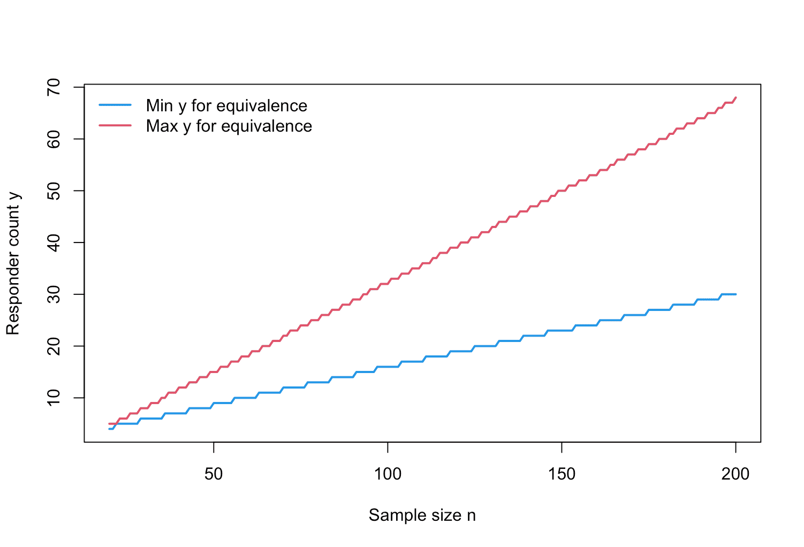
Figure 9: Visualization of the equivalence region of ROPE-based oncology single-arm one-stage phase II designs with binary endpoints for increasing sample size.
This plot shows, for each evaluated sample size , the range of responder counts that would lead the trial to conclude practical equivalence. For the selected , this region is reported in the upper right panel of Figure 8: If 20 to 35 patients show a success in the phase II trial (out of =94), then equivalence of the novel drug or treatment to the reference probability (of the standard of care) is established. Thus, we then accept .
Figure 8 also shows that both the Bayesian power and type-I-error rate are calibrated.
Example 2: Sensitivity analysis via grid exploration
Here we explore the impact of different design priors, ROPE half-widths and the posterior probability threshold for establishing equivalence.
#> # A tibble: 9 × 6
#> delta gamma_eq n_star power_H1 type1_H0 feasible
#> <dbl> <dbl> <int> <dbl> <dbl> <lgl>
#> 1 0.1 0.75 138 0.818 0.000254 TRUE
#> 2 0.1 0.8 167 0.812 0.000111 TRUE
#> 3 0.1 0.9 NA NA NA FALSE
#> 4 0.12 0.75 77 0.827 0.00200 TRUE
#> 5 0.12 0.8 94 0.823 0.000922 TRUE
#> 6 0.12 0.9 148 0.814 0.000156 TRUE
#> 7 0.15 0.75 41 0.817 0.0159 TRUE
#> 8 0.15 0.8 52 0.835 0.00769 TRUE
#> 9 0.15 0.9 78 0.820 0.00157 TRUE| delta | gamma_eq | n_star | power_H1 | type1_H0 |
|---|---|---|---|---|
| 0.10 | 0.75 | 138 | 0.818 | 0.000 |
| 0.10 | 0.80 | 167 | 0.812 | 0.000 |
| 0.10 | 0.90 | NA | NA | NA |
| 0.12 | 0.75 | 77 | 0.827 | 0.002 |
| 0.12 | 0.80 | 94 | 0.823 | 0.001 |
| 0.12 | 0.90 | 148 | 0.814 | 0.000 |
| 0.15 | 0.75 | 41 | 0.817 | 0.016 |
| 0.15 | 0.80 | 52 | 0.835 | 0.008 |
| 0.15 | 0.90 | 78 | 0.820 | 0.002 |
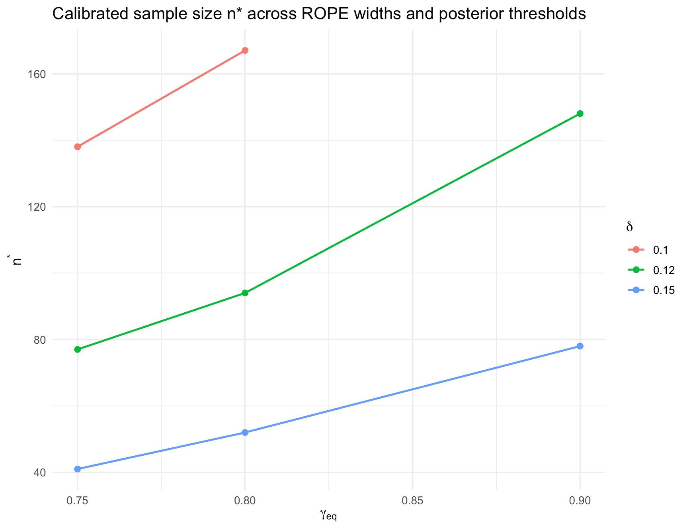
Figure 10: Calibrated sample size n* across ROPE widths and posterior thresholds for the oncology equivalence phase II trial.
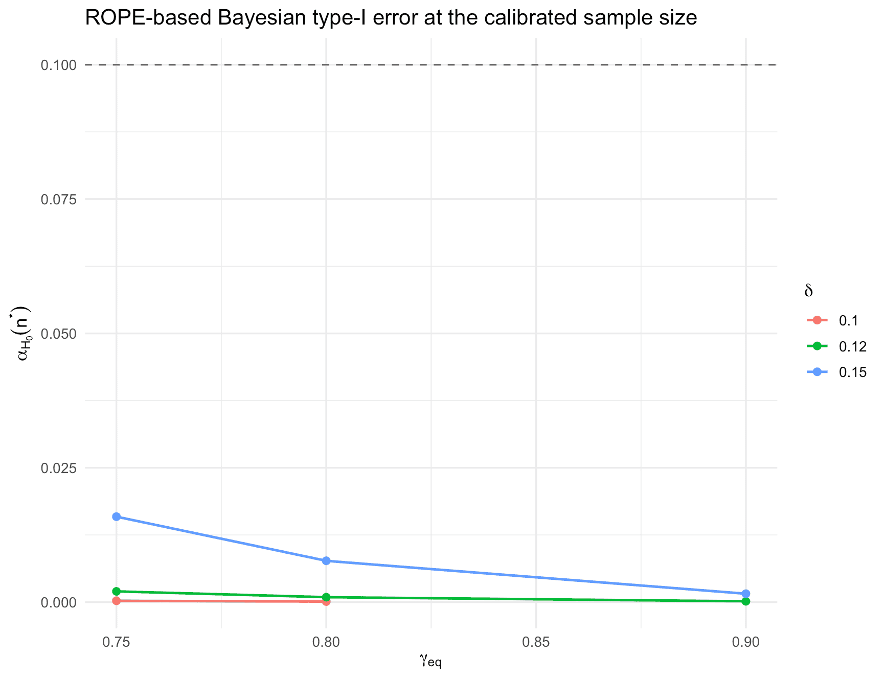
Figure 10: ROPE-based Bayesian type-I-error at the calibrated sample sizes for the oncology equivalence phase II trial for different ROPE widths.
Example 3: revisiting the first example with PCE(H0) and frequentist power
Here we revisit the first example of the oncology trial, now adding a target constraint on the probability of compelling evidence for and also reporting frequentist power post-hoc for the resulting design:
library(dplyr)
library(tidyr)
library(purrr)
library(ggplot2)
library(knitr)
# Oncology-inspired equivalence example: revisited
n_min <- 10
n_max <- 300
p0 <- 0.30
# ROPE and evidence thresholds
delta <- 0.12
gamma_eq <- 0.925
gamma_diff <- 0.90
# Analysis prior
a <- 1
b <- 1
# Design priors as in the first example
da0 <- 60
db0 <- 40 # non-equivalence prior (H0)
da1 <- 36
db1 <- 84 # equivalence prior (H1)
# Calibration targets
target_power <- 0.80 # Bayesian predictive power under H1
target_type1 <- 0.10 # Bayesian predictive type-I error under H0
target_pce_h0 <- 0.80 # predictive compelling evidence for H0
target_freq_power <- 0.80 # frequentist power at dp (here dp = p0)
target_freq_type1 <- 0.10 # frequentist type-I error at ROPE boundaries
# Point alternative for frequentist power
dp <- p0
# Design calibration in "full" mode
fit_pce_freq <- design_singlearm_onestage_rope(
n_min = n_min,
n_max = n_max,
p0 = p0,
delta = delta,
gamma_eq = gamma_eq,
gamma_diff = gamma_diff,
direction = "equivalence",
a = a,
b = b,
da0 = da0,
db0 = db0,
da1 = da1,
db1 = db1,
calibration = "full",
dp = dp,
target_power = target_power,
target_type1 = target_type1,
target_pce_h0 = target_pce_h0,
target_freq_power = target_freq_power,
target_freq_type1 = target_freq_type1,
sustain_n = 10,
return_grid = TRUE
)
fit_pce_freq
#> One-stage single-arm ROPE design
#> Direction: equivalence
#> Calibration: full
#> Search range n: 10 to 300
#> Null probability p0: 0.3
#> Margin delta: 0.12
#> Probability threshold gamma_eq: 0.925
#> Probability threshold gamma_diff: 0.9
#> Analysis prior: Beta(1, 1)
#> Design prior (H0): Beta(60, 40)
#> Design prior (H1): Beta(36, 84)
#> Target Bayesian power: 0.8
#> Target Bayesian type-I error: 0.1
#> Target PCE(H0): 0.8
#> Frequentist power point dp: 0.3
#> Target frequentist power: 0.8
#> Target frequentist type-I error: 0.1
#> Sustain n: 10
#> Selected sample size n*: 173
#> Bayesian power(n*): 0.8166
#> Bayesian type-I(n*): 0.0001
#> PCE(H0)(n*): 0.9846
#> Frequentist power(n*): 0.9597
#> Frequentist type-I(n*): 0.0784
#> at p0 - delta: 0.0755
#> at p0 + delta: 0.0784
#> Equivalence region: {39-63}
#> Compelling evidence for non-equivalence region: {0-24, 81-173}You can summarise and visualise the calibrated design:
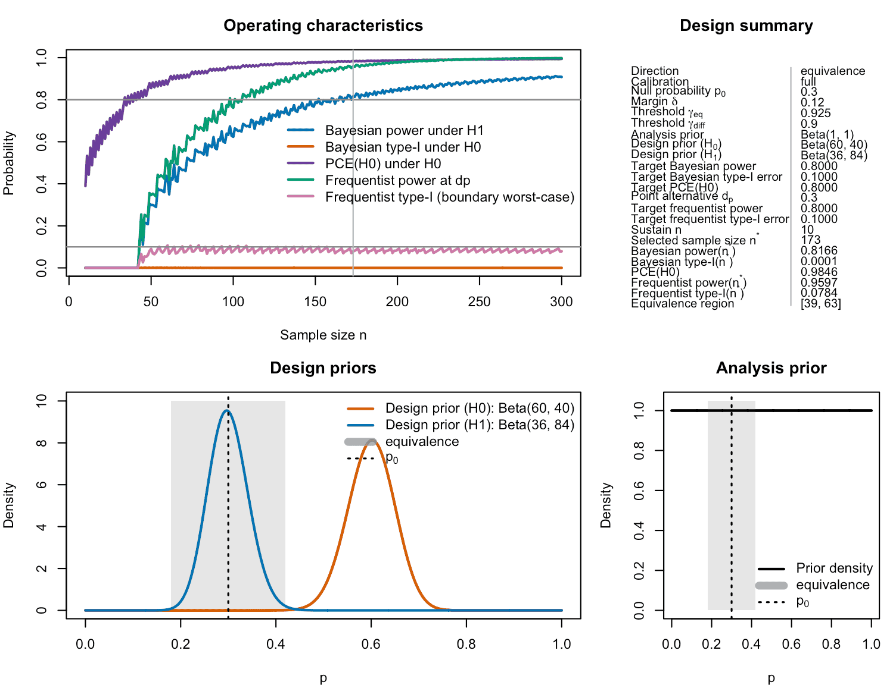
Figure 12: Calibrated one-stage ROPE-based oncology equivalence phase II design with additional constraints on the probability of compelling evidence for the null hypothesis. In contrast to the earlier example, the probability of compelling evidence must reach 80% now, and frequentist power and type-I-error rate must also fulfill their respective target constraints of 80% and 10%.
library(dplyr)
library(tidyr)
library(purrr)
library(ggplot2)
# Extract selected row and key operating characteristics
sel <- fit_pce_freq$selected
summary_tab <- tibble(
quantity = c(
"Selected sample size n*",
"Bayesian power under H1 at n*",
"Bayesian type-I error under H0 at n*",
"PCE(H0) at n*",
"Frequentist power at p = p0",
"Frequentist type-I error (worst boundary)"
),
value = c(
fit_pce_freq$n_star,
sel$power,
sel$type1,
sel$pce_h0,
sel$freq_power,
sel$freq_type1
)
)
kable(
summary_tab,
digits = 3,
col.names = c("Quantity", "Value"),
caption = "Operating characteristics of the calibrated equivalence design with constraints on Bayesian power, Bayesian type-I error, PCE(H0), and frequentist power/type-I error."
)| Quantity | Value |
|---|---|
| Selected sample size n* | 173.000 |
| Bayesian power under H1 at n* | 0.817 |
| Bayesian type-I error under H0 at n* | 0.000 |
| PCE(H0) at n* | 0.985 |
| Frequentist power at p = p0 | 0.960 |
| Frequentist type-I error (worst boundary) | 0.078 |
Optionally, you can compare this design to the original first example (purely Bayesian calibration) by recomputing the first example and putting both designs side by side in a small table:
des_onc_with_freq_power <- design_singlearm_onestage_rope(
n_min = 20,
n_max = 200,
p0 = 0.30,
delta = 0.12,
gamma_eq = 0.80,
# frequentist power at p = 0.3
dp = 0.3,
# Analysis prior p ~ Beta(a, b)
a = 1, b = 1,
# Design priors under H0 and H1
da0 = 60, db0 = 40, # H0: non-equivalence, mean ~0.60
da1 = 36, db1 = 84, # H1: equivalence, mean ~0.3
target_power = 0.80,
target_type1 = 0.10,
target_freq_type1 = 0.10,
target_freq_power = 0.80,
sustain_n = 10,
calibration = "Bayesian"
)
sel_orig <- des_onc_with_freq_power$selected
sel_new <- fit_pce_freq$selected
comparison_tab <- tibble(
design = c("Bayesian (original)", "Full (Bayes + frequentist + PCE(H0))"),
n_star = c(sel_orig$n, fit_pce_freq$n),
bayes_power = c(sel_orig$power, sel_new$power),
bayes_type1 = c(sel_orig$type1, sel_new$type1),
pce_h0 = c(sel_orig$pce_h0, sel_new$pce_h0),
freq_power = c(sel_orig$freq_power, sel_new$freq_power),
freq_type1 = c(sel_orig$freq_type1, sel_new$freq_type1)
)
kable(
comparison_tab,
digits = 3,
caption = "Comparison of the original Bayesian calibration and the extended design with additional constraints on PCE(H0) and frequentist power/type-I error."
)| design | n_star | bayes_power | bayes_type1 | pce_h0 | freq_power | freq_type1 |
|---|---|---|---|---|---|---|
| Bayesian (original) | 94 | 0.823 | 0.001 | 0.973 | 0.925 | 0.240 |
| Full (Bayes + frequentist + PCE(H0)) | 173 | 0.817 | 0.000 | 0.985 | 0.960 | 0.078 |
This third example stays within the equivalence framework but shows how the same posterior-threshold decision rule can be calibrated to satisfy additional Bayesian and frequentist criteria, including a lower bound on predictive compelling evidence for .
Summary
This vignette has shown how
design_singlearm_onestage_rope() can be used to:
define a baseline ROPE-based equivalence design in a realistic phase II range,
quantify how the evidence threshold
gamma_eq, ROPE widthdelta, design priors, and sustain requirement influence the required sample size, power, and type-I error.
In practice, we recommend exploring such grids of tuning parameters collaboratively with clinicians, to arrive at a design where the ROPE region, evidence thresholds, and priors are all clinically interpretable and the resulting sample size is operationally feasible.